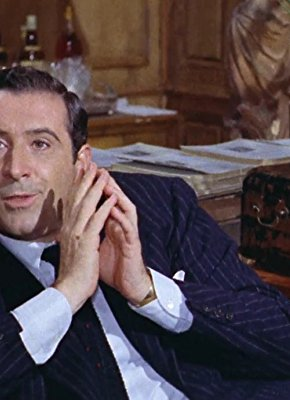

#3924 1900 - Teil 1 - Gewalt, Macht, Leidenschaft
Alternativ: 1900 (Englischer Titel)


 IMDB-Wertung: 7.7 / 10
IMDB-Wertung: 7.7 / 10  Metascore: 0
Metascore: 0 
Jahrhundert-Epos von Bertolucci um zwei zum selben Zeitpunkt geborene Jungen die zu Männern reifen und aufgrund ihrer Herkunft zu politischen Gegnern werden. Zwischen beiden steht die mondäne Ada, die das Unheil in der Allianz von Adel und Kirche mit den Faschisten kommen sieht.
Jahr: 1976
Dauer: 162 Minuten
FSK: 16
Land: Italien Studio: United ArtistsTonspuren:
Untertitel: Deutsch,
Auflösung: 1080p (1920x1040) Größe: 13414 MB
Genre: Drama
Regisseur:  Bernardo Bertolucci
Bernardo Bertolucci
Drehbuch: Elise Allen
Soundtrack:
Darsteller:
 Robert De Niro als Alfredo Berlinghieri
Robert De Niro als Alfredo Berlinghieri Gérard Depardieu als Olmo Dalcò
Gérard Depardieu als Olmo Dalcò- Dominique Sanda als Ada Fiastri Paulhan
- Francesca Bertini als Sister Desolata
 Sterling Hayden als Leo Dalcò
Sterling Hayden als Leo Dalcò Alida Valli als Signora Pioppi
Alida Valli als Signora Pioppi- Paulo Branco als Orso Dalcò
- Stefania Sandrelli als Anita Foschi
 Donald Sutherland als Attila Mellanchini
Donald Sutherland als Attila Mellanchini Burt Lancaster als Alfredo Berlinghieri the Elder
Burt Lancaster als Alfredo Berlinghieri the Elder Laura Betti als Regina
Laura Betti als Regina- Werner Bruhns als Ottavio Berlinghieri
- Stefania Casini als Neve - Epileptic Woman
- Anna Henkel-Grönemeyer als Anita the Younger
- Ellen Schwiers als Amelia
-  Romolo Valli als Giovanni Berlinghieri
- Bianca Magliacca als Peasant Woman
- Giacomo Rizzo als Rigoletto
- Pippo Campanini als Don Tarcisio
- Paolo Pavesi als Alfredo as a Child
- Roberto Maccanti als Olmo as a Child
- Antonio Piovanelli als Turo Dalcò
- Liù Bosisio als Nella Dalcò
- Maria Monti als Rosina Dalcò
- Anna Maria Gherardi als Eleonora
- Demesio Lusardi als Montanaro - Big Eared Peasant
- Pietro Longari Ponzoni als Pioppi
- Angelo Pellegrino als Tailor
- José Quaglio als Aranzini
- Clara Colosimo als Woman who accuses Olmo
- Mario Meniconi als
- Carlotta Barilli als Peasant
- Odoardo Dall'aglio als Oreste Dalcò
- Piero Vida als
- Vittorio Fanfoni als Fanfoni - a fascist
- Alessandro Bosio als Fascist
- Sergio Serafini als Young Fascist
- Patrizia De Clara als Stella
- Edda Ferronao als Stella's Daughter
- Winni Riva als Parisian Peasant
- Fabio Garriba als Peasant at Attila's execution
- Nazzareno Natale als Peasant at Attila's execution
- Katerina Kosak als Parisian Peasant
- Allen Midgette als Vagabond , uncredited
- Salvator Mureddu als Chief of the King's Guards , uncredited
- Mimmo Poli als Fascist , uncredited
- Tiziana Senatore als Regina as a Child , uncredited
Datei: X:\2-Dilogie(A-F)\1900 - Novecento\1900 - Teil 1 - Gewalt, Macht, Leidenschaft (1976, FSK16, 1920x1040).mkv seit 30.06.2016
Festplatte: HD Collection-2(A-Z)-3(A-M)
 Alle Filme aus Gruppe '2-Dilogie(A-F)\1900 - Novecento'
Alle Filme aus Gruppe '2-Dilogie(A-F)\1900 - Novecento'